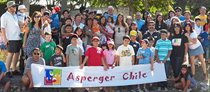

Apoyar y acompañar a las familias con Asperger y Autismo de Alto Funcionamiento en el camino hacia la inclusión social”.
Nuestros objetivos son difundir los Trastornos del Espectro Autista, para lograr un diagnóstico temprano, oportuno y certero.
Situar los Trastornos del Espectro Autista dentro de la agenda de prioridades de nuestra realidad nacional.
Objetivos
Lograr un acceso a la intervención temprana para todos los niños y niñas que reciban este diagnóstico, que asegure un desarrollo de sus potencialidades y que le permita una completa integración a la sociedad.
Desarrollar en los diferentes actores de nuestra sociedad, una actitud de respeto y tolerancia a la neurodiversidad.
Salvaguardar los derechos de nuestros niños, jóvenes y adultos.
Historia

Asperger Chile nace el 22 de Mayo de 2008, como una comunidad virtual desde la plataforma Facebook.
Somos familias de todo Chile, con realidades socioeconómicas transversales, pero todas tenemos un lugar común: la vida escolar de nuestros hijos, lejos de ser una experiencia motivadora, es una
fuente de frustración e impotencia “por no cumplir con la norma”.
Junto con ello, buscamos que los niños Asperger y los que se encuentren dentro del Espectro Autista, cuenten con el apoyo multidisciplinario que necesitan: Neurología, Siquiatría, Terapia Ocupacional, Sicología, Fonoaudiología, y la Terapia Medicamentosa.
La intervención médico-educativa no debe estar supeditada a la situación económica de los padres ni deber causar un desastre económico a las familias.
Pero creemos que la labor más importante es el de la sensibilización de nuestra sociedad:
Investigaciones recientes revelan que “La formación del profesorado no parece ser determinante para la realización de prácticas inclusivas”. También señala que “una mayor previsión de los recursos no garantizaría prácticas más inclusivas”.
Lo que favorece la inclusión es el reconocimiento de la diversidad. Y eso en el contexto Asperger hace un mundo de diferencia, porque al respetarse los tiempos y buscar recursos alternativos de aprendizaje, se optimizan las capacidades (algunas sobresalientes) y se desarrollan aquellas que están disminuidas.
El 17 de Abril de 2010, realizamos nuestra primera reunión y dimos por iniciadas las actividades para traspasar los muros virtuales y obtener logros concretos que vaya en directo beneficio del desarrollo educativo y emocional de nuestros hijos.
Hoy marcamos presencia en la sociedad chilena a través de nuestras múltiples actividades y constituimos una gran comunidad, que aumenta día a día.
Nuestra personalidad jurídica fue concedida por Decreto Supremo N°6750, de 29 de diciembre de 2011, del Ministerio de Justicia, publicado en el diario oficial el 31 de enero 2012.